 Halocline
Halocline
status: pre-alpha
target: sm_89 only
models: Qwen4 family
licence: MIT
Quality is everything.
One engine, two paths: sparse and dense. Qwen mixture-of-experts and dense models on one NVIDIA Ada GPU, a 24 GB RTX 4090. Each result names the run directory that produced it.